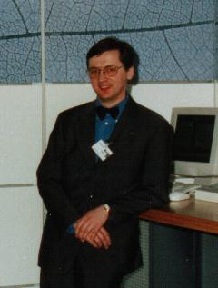

CipherClerk's Applet
World Wide Electronic Paper & Pencil Cryptography
+
World Wide Virtual Cipher Machines
Ifi mkr oraj fi bv alhbmm, b clfi ipndej omumrm:
Bn rn zsel grmo ycj kmzmy mnph jkr uam ils vpgkhev;
kcan rn sanjmhpbm pt fgqcapyxm mz ycj vbl.
- Bsmwfgl jr Nafgm-Stizvxh
(First reported decrypt by Jim Gillogly <jim@acm.org>,
July'98)
Copyright by Wilhelm M. Plotz (aka CipherClerk),
1997-2003
(Offline)
What CipherClerk's Applet Is NOT
CipherClerk's Applet is not a tool to protect information. The ciphers
implemented in this package do not provide secrecy any more! They are more
or less outdated. They can be broken, e. g. the original message can be
reconstructed without knowing the keyword, even without the knowledge which
cipher was used! Thus you should not use them to protect vital or valuable
information. This packages is intended for amusement, not for security! If
you search security, go for PGP - a free, state-of-the art cryptography package
available for virtually all computer systems.
So What Is CipherClerk's Applet?
CipherClerk is an applet implementing a collection of historic ciphers.
Most ciphers are "paper & pencil" types, e. g. to use them you wouldn't
need more than a sheet of paper and something to write.
You'll find various historic cipher systems, both substitution and transposition
types. If you've know about Vigenere, Porta, Beaufort, Bifid, and Playfair:
they are all available!
Finally, there are some machine ciphers of the WWII era, too.
Legal Stuff
ChiperClerk's Applet is not in public domain. It is copyrighted,
but you may use it freely. I tested this package carefully and found
no problems. I think it should not cause any damage to you system. Furthermore,
the Java environment in your web browser is claimed to provide enough security
to protect you from possible damage. Nevertheless it is provided "as is"
without express or implied warranty:
I DISCLAIM ALL WARRANTIES WITH REGARD TO THIS SOFTWARE,
INCLUDING ALL IMPLIED WARRANTIES OF MERCHANTABILITY AND FITNESS. IN NO
EVENT SHALL I BE LIABLE FOR ANY SPECIAL, INDIRECT OR CONSEQUENTIAL DAMAGES
OR ANY DAMAGES WHATSOEVER RESULTING FROM LOSS OF USE, DATA OR PROFITS, WHETHER
IN AN ACTION OF CONTRACT, NEGLIGENCE OR OTHER TORTIOUS ACTION, ARISING
OUT OF OR IN CONNECTION WITH THE USE OR PERFORMANCE OF THIS SOFTWARE.
Virtual US Army Cipher Device, Model M-94
I wrote another crypto applet / application for simulation the US Army wheel cipher M-94 and Maior Bazeries cipher device. It does provide much
of the look & feel of the original device. Since it is not as huge
as CipherClerk, it should load mush faster, too.
To proceed, you may
- read about Cryptography,
if you have no or little knowledge about this.
- read how to use CipherClerk's
Applet, if you don't know about it.
- see which ciphers are available
within CipherClerk's Applet.
- read about things to come and known
bugs.
- you may start the CipherClerk's applet.
Expect a delay of a few minutes to load the applet: It consists of
aprox. seventy class files with a total size of 300 KB.
There is a .zip file containing all classes so that a browser can load
one file instead of many. All maior current browsers should take advantage
of this archive. - finally, you may download CipherClerk's
Applet for off-line usage (aprox. 900KB). The files contains a compressed
copy of the whole site. Expand the zip'ed stuff into any folder you like
and then open one of the HTML files with a browser capable of using Java
Applets.
|

CipherClerk, picture taken in 02/1999
|
Morning-star in unusual place:
Des Ororaf Unrex
Xx Giumngt-Thtt ny nxx helg iehtu lr Fosxx.
- Tossenns. Lot Udnox
|
This page can be found at members.aon.at/cipherclerk
.